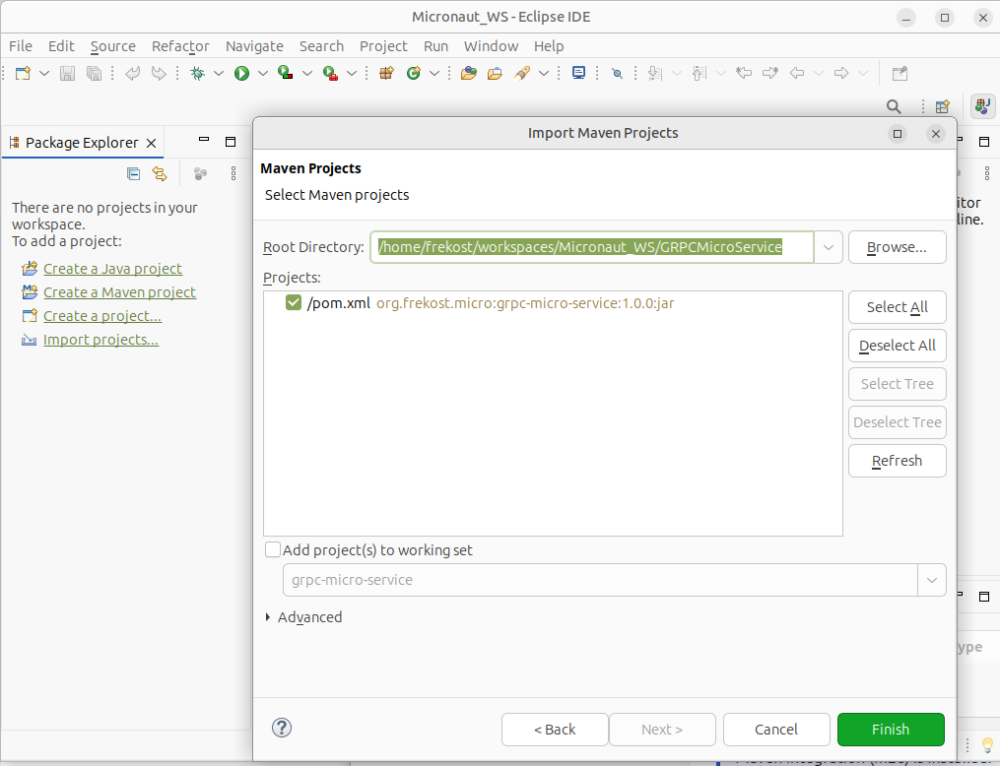
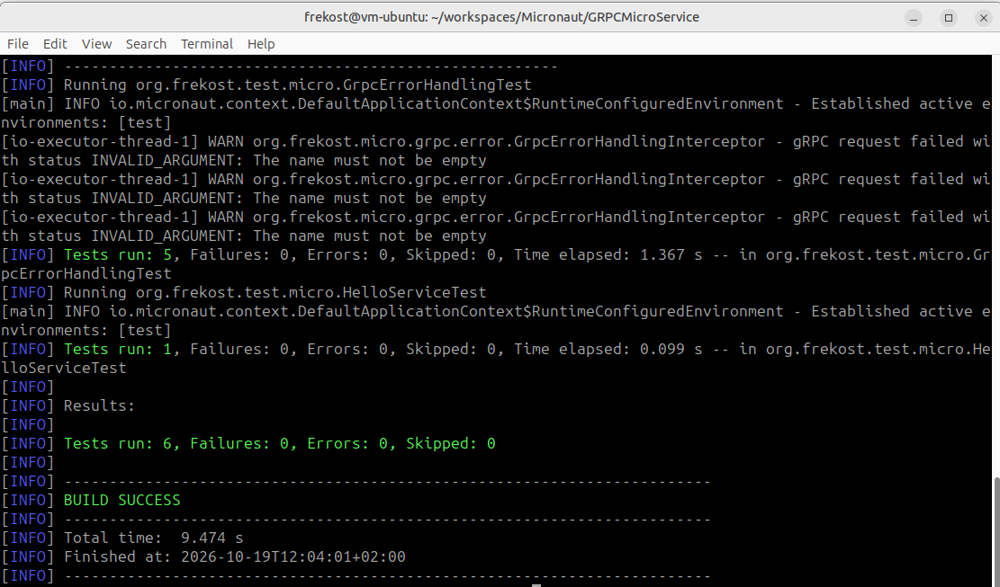
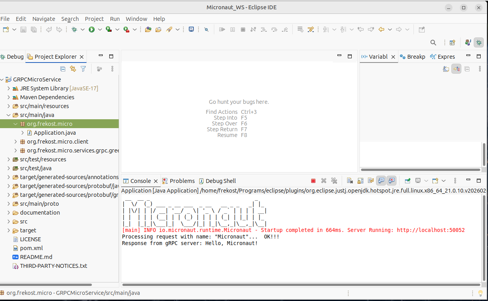

What you'll do
GRPCMicroService is a Java starter project demonstrating a
simple gRPC Greeter service built with Micronaut.
Follow this workflow from the project folder to a successful
Maven verification and a local application run.
This is a getting-started guide, not a production deployment guide.
01Requirements
- JDK 21 installed and selected in your environment or IDE.
- Apache Maven installed and available on your terminal's
PATH, unless you use an IDE-provided Maven installation. - Internet access so Maven can download dependencies on the first build.
- Eclipse IDE with Maven project support (m2e), if you want to follow the IDE workflow. A terminal can also be used.
Check Java and Maven
java -version
mvn -versionConfirm that Java reports version 21 and Maven is using a compatible JDK.
02Import the project into Eclipse
- Extract the downloaded project ZIP into a folder you can find easily.
- Open Eclipse.
- Select File → Import… → Maven → Existing Maven Projects.
- Choose the extracted project folder as the root directory.
- Select the discovered
pom.xmlproject and finish the import. - Wait for Eclipse and Maven to resolve dependencies and finish background tasks.

03Verify the project with Maven
Open a terminal in the directory that contains
pom.xml.
mvn clean compile verifyThis command asks Maven to:
- clean previous build output;
- generate Java sources from the Protocol Buffers definition and the gRPC service contract;
- compile the application and generated sources;
- run the configured tests;
- execute the remaining lifecycle steps required to reach the verification phase.

BUILD SUCCESS, confirming that
the configured build and verification steps completed
successfully in your environment.
Important: This command verifies the project; it does not leave the application running. Start the application in the next step.
Run an individual test class
You can also run a specific test class from the project root:
mvn -Dtest=HelloServiceTest test
mvn -Dtest=GrpcErrorHandlingTest test
mvn -Dtest=GrpcLoggingInterceptorTest testThese commands run the service, error-handling, and logging interceptor test classes respectively.
04Run the application from Eclipse
- In Project Explorer, locate
Application.javain the main Java source tree. - Right-click the file and choose Run As → Java Application.
- Watch the Console view for startup information, the sample client output, and gRPC logging messages.

The sample configuration uses gRPC port 50052.
The included HelloClientRunner bean is scheduled
to invoke the service after an initial delay of three seconds.
Successful output should include a response similar to:
Response from gRPC server: Hello, Micronaut!
The request is handled by the Greeter service
defined by the project's Protocol Buffers contract.
Observe gRPC server logging
The GrpcLoggingInterceptor provides centralized
logging for intercepted gRPC server calls. It records the
method name when a call starts and reports the completion
status and elapsed time when the call finishes.
For a successful call, the Console may contain messages similar to:
gRPC call started: method=helloworld.Greeter/SayHello
gRPC call completed: method=helloworld.Greeter/SayHello, status=OK, durationMs=12The duration above is an example. The actual value depends on runtime conditions.
The interceptor uses SLF4J with SLF4J Simple as the logging backend. Log messages are written to the console.
- Successful calls are logged at
INFOlevel. - Calls completed with a non-OK gRPC status are logged at
WARNlevel. - Synchronous exceptions raised while starting a call are logged at
ERRORlevel and rethrown. - Request and response payloads are not logged.
50052 is already in use, identify the
process using it or change the server port and matching client
address together.
05Quick troubleshooting
Maven cannot download dependencies
Check your internet connection, proxy settings and Maven
repository access. Then rerun
mvn clean compile verify.
The wrong Java version is used
Check java -version and mvn -version.
In Eclipse, also review the project's JRE System Library and
installed JRE settings.
Eclipse shows generated-source errors
Run mvn clean generate-sources from the directory
containing pom.xml. Then refresh the project and
select Maven → Update Project... if necessary.
Port 50052 is occupied
Stop the process using that port, or change the gRPC server port and the matching client address together.
The sample response does not appear
Check the Console for startup errors, confirm that the
greeter client channel targets
localhost:50052, and inspect any client error
messages. Also confirm that the server started successfully
before the scheduled client invocation.
A request returns INVALID_ARGUMENT
The greeting service rejects names that are empty or contain
only whitespace. The error-handling interceptor maps this
validation failure to the gRPC status
INVALID_ARGUMENT. Try a non-empty name.
gRPC logging messages do not appear
Confirm that the application has started successfully and
that the request is reaching the gRPC server. Check the Console
for the gRPC call started and
gRPC call completed messages.
If the messages are absent, verify the interceptor's registration and the application's logging configuration. Also confirm that you are inspecting the Console for the running application rather than output from a previous run.
A gRPC call completes with a non-OK status
Inspect the returned gRPC status and the application logs. The logging interceptor reports the completion status, while the error-handling mechanism maps supported application exceptions to gRPC status errors.
Eclipse reports Maven errors after a POM change
Save the POM, choose Maven → Update Project...,
and wait for dependency resolution to finish. If the problem
persists, compare Eclipse's errors with the output of
mvn clean compile verify.
What's included in GRPCMicroService?
- Micronaut application entry point and gRPC service implementation.
- Protocol Buffers service contract (
helloworld.proto). - Maven configuration for Protocol Buffers and gRPC source generation.
- Application configuration for the gRPC server and client channel.
- A sample gRPC client and scheduled client runner.
- Centralized handling of supported synchronous gRPC server exceptions.
- Centralized gRPC call logging with method names, completion statuses, and elapsed time.
- Service tests, gRPC error-handling tests, and logging interceptor tests.
- Technical documentation and troubleshooting guidance.
Ready to explore?
This free guide explains the basic workflow. The project's technical documentation provides more detail about its structure, service contract, configuration, testing, error handling, and logging.
Visit the GRPCMicroService project on GitHub
Browse the technical documentation
Scope: This starter is intended for learning and adaptation. A successful local build is not, by itself, a production-readiness or security certification.